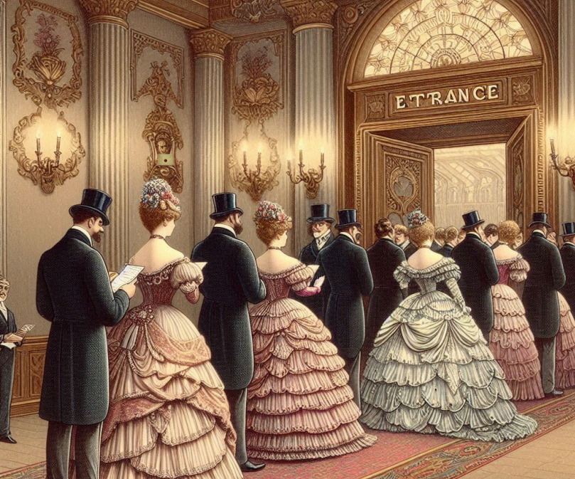

×
הוד מעלתך,
הנך מוזמן/ת לנשף הסודי אשר ייערך בארמון עם צלצול הפעמון בחצות. אך רק מי שידע את התשובה לחידה הבאה יוכל לעבור את שערי הארמון:
חידת הכניסה:
אינני חי אך אני צומח,
אין לי ריאות אך אני נושם,
אין לי פה אך אני מדבר.
מה אני?
שלח
